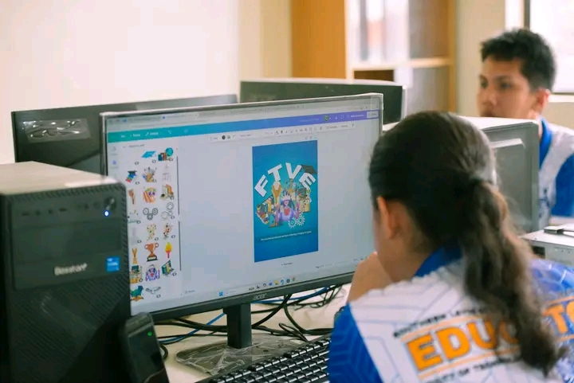
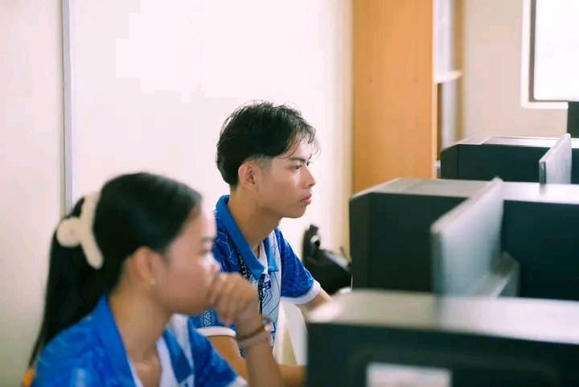

Program Overview
BackThe ICT major is designed to produce teachers who are not only "tech-savvy" but are also experts in Instructional Design. Students learn to master computer systems, networking, and software development, and then apply that knowledge to create effective learning environments.

Technical Laboratory Training

Hands-on Teaching Workshop
Course Curriculum
| Courses | No. of Subjects | Units | Total |
|---|---|---|---|
| A. General Education Courses (CMO No. 20, series of 2013) | 12 | 36 units | |
| B. Professional Education Courses | 48 units | ||
| FOUNDATION COURSES/THEORIES AND CONCEPTS COURSES | |||
| 1. The Child and Adolescent Learner and Learning Principles | 1 | 3 | |
| 2. The Teaching Profession | 1 | 3 | |
| 3. The Teacher and the Community, School Culture and Organizational Leadership with focus on the Philippine TVET System* | 1 | 3 | |
| 4. Foundation of Special and Inclusive Education (new mandated) | 1 | 3 | |
| PEDAGOGICAL CONTENT KNOWLEDGE (PCK) COURSES | |||
| 5. Facilitating Learner-Centered Teaching: The Learner-Centered Approaches with Emphasis on Trainers Methodology I* | 1 | 3 | |
| 6. Assessment in Learning 1 | 1 | 3 | |
| 7. Assessment in Learning 2 with focus on Trainers Methodology 1 & 11* | 1 | 3 | |
| 8. Technology for Teaching and Learning 1** | 1 | 3 | |
| 9. Curriculum Development and Evaluation with Emphasis on Trainers Methodology II* | 1 | 3 | |
| 10. Building and Enhancing New Literacies Across the Curriculum with Emphasis on the 21st Century Skills* | 1 | 3 | |
| EXPERIENTIAL LEARNING | 3 | ||
| 11. Field Study 1 | 3 | ||
| 12. Field Study 2 | 3 | ||
| 13. Practice Teaching/Internship | 6 | ||
| C. Research | 2 | ||
| 14. Research 1 (Methods of Research) | 3 | ||
| 15. Research 2 (Undergraduate Thesis/Research Paper/ Research Project) | 3 | ||
| D. Major Courses | 66 units | ||
| Teaching Exploratory Courses (6 units of IA, 6 units of HE, 6 units of ICT, 6 units 30 of Agri-Fishery and 3 units of Entrep) | 30 | ||
| 1. Introduction to Industrial Arts Part | | 1 | 3 | |
| 2. Introduction to Industrial Arts Part II | 1 | 3 | |
| 3. Home Economics Literacy | 1 | 3 | |
| 4. Family and Consumer Life Skills | 1 | 3 | |
| 5. Introduction to ICT Specializations 1 | 1 | 3 | |
| 6. Introduction to ICT Specializations 2 | 1 | 3 | |
| 7. Agri-Fishery Part! | 1 | 3 | |
| 8. Agri-Fishery Part II | 1 | 3 | |
| 9. Entrepreneurship | 1 | 3 | |
| 10. Technology for Teaching and Learning 2** | 1 | 3 | |
| Major Courses in ICT (any 2 of the following specialization courses ex: 36 1 & 2 or 1& 3 with a total of 36 units) | 36 | ||
| 1. Illustration and 2D Animation (18 units) | |||
| a. Illustration | |||
| i. Drawing Tools and Animation | 3 | ||
| ii. Drawing Concepts and Strategies | 3 | ||
| iii. Troubleshooting Techniques | 3 | ||
| b. 2D Animation | |||
| i. Key Drawings | 3 | ||
| ii. 2D Digital Animation | 3 | ||
| iii. Authoring Tools | 3 | ||
| 2. Web Site Development & Digital Media Production (18 units) | |||
| a. Web Site Development | |||
| i. Website Creation | 3 | ||
| ii. Internet marketing | 3 | ||
| iii. Author Wares | 3 | ||
| b. Digital Media Production | |||
| i. Video Production | 3 | ||
| ii. Audio Production | 3 | ||
| iii. Print Production | 3 | ||
| 3. Computer Systems Servicing, Telecom (OSP), Subscriber Line Installation (Copper Cable/POTS and DSL), Telecom OSP Installation (Fiber Optic Cable) and Broadband Installation (Fixed Wireless Systems) (18 units) | |||
| a. Computer Systems Servicing | 3 | ||
| b. Telecom (OSP) | 3 | ||
| c. Subscriber Line Installation (Copper Cable/POTS and DSL) | 3 | ||
| d. Telecom OSP Installation (Fiber Optic Cable) | 3 | ||
| e. Broadband Installation (Fixed Wireless Systems) | 3 | ||
| f. Customer Relations | 3 | ||
| 4. Contact Center Services (18 units) | |||
| a. Call Center-Basics | 3 | ||
| b. Foreign Language | 3 | ||
| c. Computer and Internet Manipulation | 3 | ||
| d. Sales Support | 3 | ||
| e. Customer Support | 3 | ||
| f. Post-support Documentation | 3 | ||
| E. Mandated Courses | 14 units | ||
| Physical Education 1-4 | 4 | 8 | |
| National Service Training Program 1& 2 | 2 | 6 |